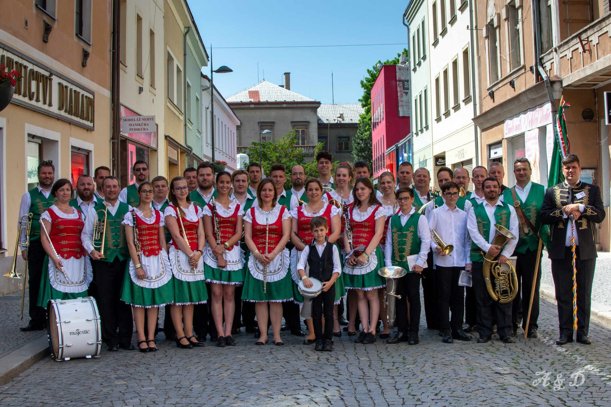

Péti Dominik
Célom, hogy sikeres legyek az életben.
Mit tanultam eddig? / Mit értem el eddig?
- Gazdasági informatikus Technikum Zsámbék Premo
- Programozási nyelvek, amiben kicsit ismeretes vagyok
- Java
- Python
- Pascal
- "B" jogosítvány
- Jópár külföldi országba utazhattam, köztük Kínába és Dubaiba a Mogyorósbányai fúvószenekarral
Kedvenc tevékenységeim
Szabadidőmben videójátékozom, zenélek, biciklizek, scriptelek vagy mezőgazdasági munkálatokat végzek.
